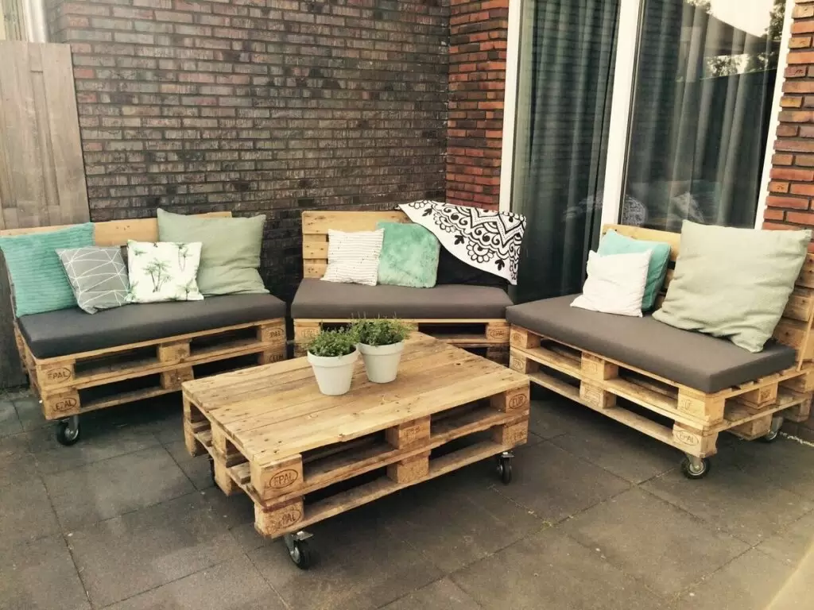
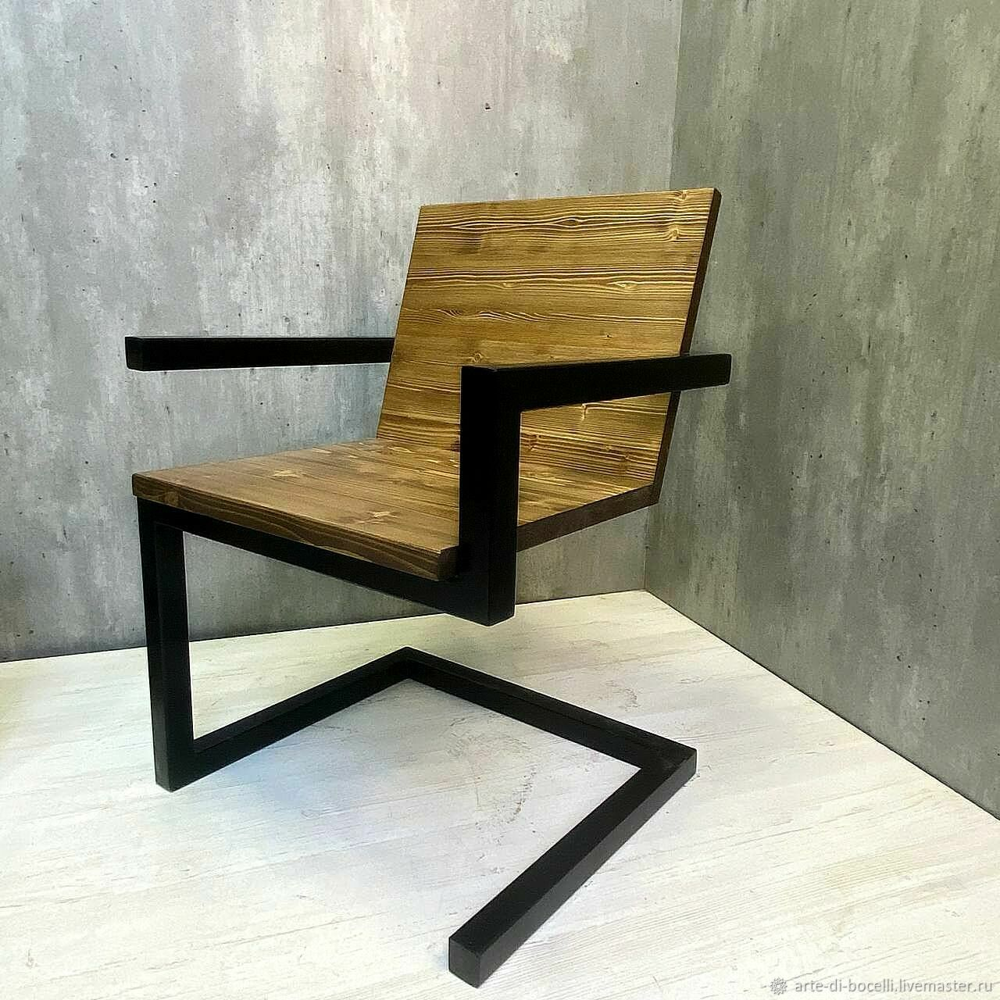
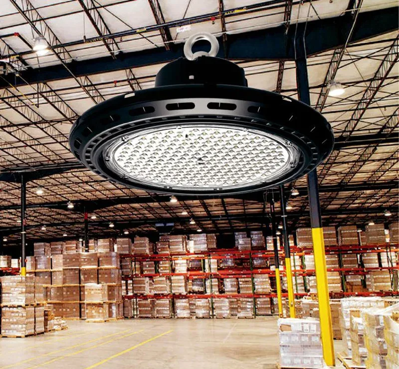
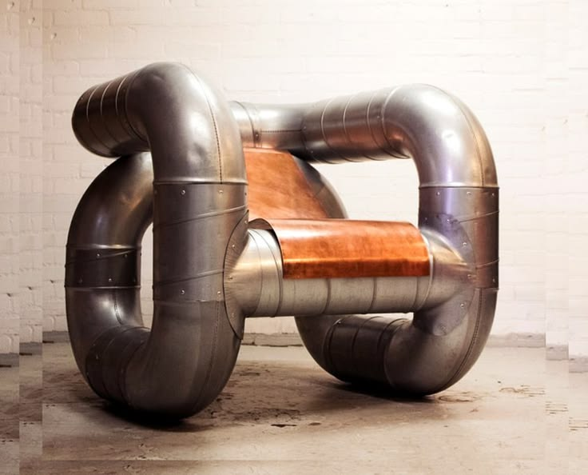

Мебель из поддонов
Диваны, кровати и столы, сделанные из деревянных паллет — типичный пример лофтовой эстетики "сделай сам".
Деревянные паллеты
Промышленные материалы
Голый кирпич, бетонные стены и открытые коммуникации — брутальная красота промышленных пространств.
Лофт (от англ. loft — "чердак", "верхний этаж") зародился в 1940-х годах в Нью-Йорке, когда художники и творческие люди начали селиться в заброшенных промышленных зданиях из-за низкой арендной платы. Они сохраняли индустриальные элементы, создавая уникальные жилые пространства.
"Лофт — это не стиль, это образ жизни. Это свобода самовыражения в пространстве без границ." — Кристофер Ларкин


Диваны, кровати и столы, сделанные из деревянных паллет — типичный пример лофтовой эстетики "сделай сам".

Лофтовые светильники в стиле фабричного освещения: лампы Эдисона, металлические абажуры, открытые провода.

Столы, стеллажи и вешалки из металлических труб и фитингов, напоминающие промышленные коммуникации.
В лофте не скрывают, а выставляют напоказ трубы, вентиляцию и электропроводку, превращая их в элементы декора.
Кирпичная кладка — визитная карточка лофта. Часто оставляют неоштукатуренной или покрывают прозрачным лаком.
Огромные окна от пола до потолка, часто с металлическими рамами, пропускают максимум света в просторное помещение.
Уберите ненужные перегородки, объедините кухню, гостиную и столовую в одно пространство.
Используйте кирпич, бетон, металл и необработанное дерево. Можно имитировать с помощью плитки или штукатурки.
Выбирайте простую, функциональную мебель из металла и дерева. Отлично подойдет мебель на колесах.
Подвесные лампы на длинных проводах, трековые системы, лампы Эдисона в металлических плафонах.